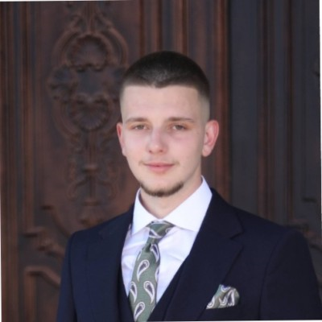

VLERSIMET E PACIENTËVE
Pacientët tanë vlerësojnë kujdesin e përkushtuar dhe profesionalizmin që ofrojmë.
Lexoni mendimet dhe përvojat e tyre për të kuptuar pse na besojnë për shëndetin e tyre.

Shërbimi ishte i jashtëzakonshëm! Stafi ishte shumë profesional dhe i kujdesshëm gjatë gjithë kohës. Do ta rekomandoj klinikën për kujdesin shëndetësor.
Leon Troni

Një përvojë shumë pozitive! Ambienti i pastër dhe i organizuar mirë, ndërsa mjekët treguan përkushtim të madh. Do të dëshiroja vetëm kohë më të shkurtër pritjeje.